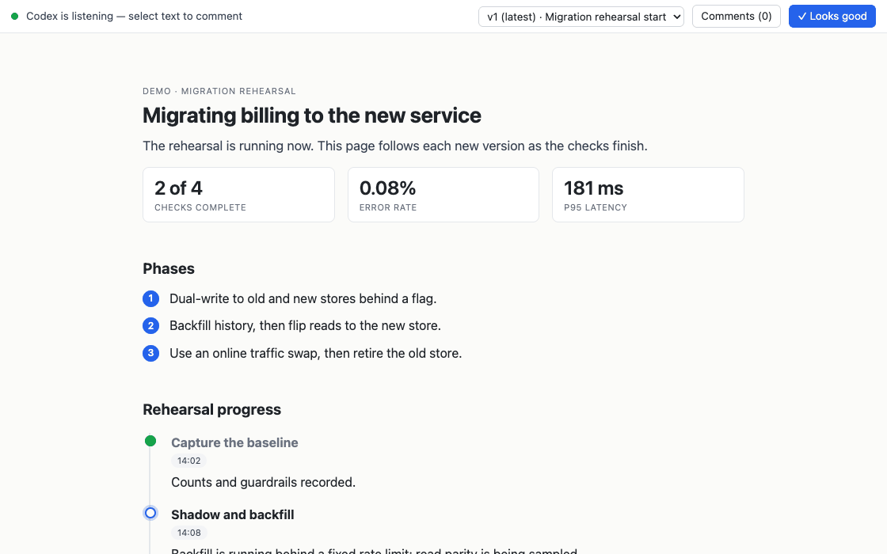

colloquy · a Claude Code and Codex plugin
Collaborate with your agent in HTML.
Your agent builds you a page rather than a scroll of terminal text: diagrams, boards you drag, a list of work that ticks over as it goes. Select any line and comment on it like a shared doc; the comment itself wakes the session, and a revised version arrives with the change.
It works for anything that would otherwise land as a wall of terminal
text: a migration plan, an architecture write-up, an incident diagnosis, a PR
walkthrough, a review, or a list of things to work through that ticks over as the agent
does them. Two commands install it. No accounts,
no daemon, no config; you need uv
on your PATH and a browser on the same machine.

What a page can do
- Explain. Everything HTML has to offer, in place of everything a terminal doesn't: mermaid diagrams, a code walkthrough with remarks anchored at the line each is about, a unified diff, a file tree, two screenshots that flip between before and after, a row of measurements, evidence collapsed under the claim it backs, and real links out to the source line or the ticket. It prints, too.
- Collaborate. Ask about one part of the page rather than the whole of it. Every passage carries its own thread, so several conversations run at once and each stays anchored to the words it is about: yours and the agent's alike, since it opens threads on the page the same way you do.
- Interact. The page takes input back. Drag cards to re-prioritize a board, click an option to decide it, accept or reject a proposed edit, or rewrite a draft (an email, a release note) in your own words. Each edit reaches the agent as a structured action and holds its place on every later version.
- Track. A page can be a working dashboard rather than a document: the state of the resources you asked about, a queue draining, a checklist ticking over. The agent republishes as the work moves and your browser follows on its own, so you watch it happen rather than reading a summary afterwards.
How it works shows the widget system rendering live; Customize covers theme overlays and project widgets. The examples gallery holds a complete page for each kind of write-up.
Example: Review a plan
- Ask. "Write up the migration options as a page"
triggers it, as does
/colloquyin Claude Code or$colloquyin Codex. The agent writes the page, serves it on a loopback port, and prints the URL. - Mark it up. Select any passage and comment; the passage stays lit while you write, and the comment anchors to it and stays anchored as versions change — to the passage you picked, even where the page says the same thing twice. Diagrams and images take comments by click, and a suggestion mode proposes replacement text that the agent takes verbatim or answers with why not. The agent opens threads the same way — a question about one sentence arrives in the margin beside it, not in the terminal.
- Your comment wakes the agent. The session's turn
ends on a background
review waitthat exits the moment an event lands, re-invoking the agent. Nothing runs between rounds. - A revision ships. Versions are immutable, each with a one-line changelog. The page follows the newest while keeping your place on it, and the Δ toggle marks every passage that changed since the version before.
- Sign off. "✓ Looks good" closes the review;
pages that seek approval carry the button, informational ones take comments only.
review transcriptprints the whole thread as Markdown for a PR description.

scripts/record-demo.sh: comment on
a passage, watch a new version advance the work, then move a card.Example: Re-prioritize a queue
The release-triage example hands the ordering to the reviewer. Run the shipped page, then drag “CSV export quotes numerics” from “Fix in 2.4.1” to “Blocking release”:
scripts/preview.py triage-board{"widget":"release-board","action":"move","detail":{"card":"card-export",
"to":"col-blocking","index":2}}. The move appears immediately, reaches the
agent as an action, and remains on later versions.Example: Watch work finish
The cutover-rehearsal example is a page the agent keeps current while it works. It names what is running now, separates blocked work from the critical path, and records completed checks. Run it like any other example:
scripts/preview.py live-progress- v4: 11 of 18 checks are done; traffic has just moved to the new checkout service.
- v5: 14 are done; rollback is running, so that milestone becomes active and the event timeline gains the cutover result.
- v6: rollback is done; the report becomes active and the browser follows the version without a reload.
The example is the middle state, with metrics, milestones, a blocker, and an event log for the next version to update in place.
Install
Claude Code
/plugin marketplace add max-sixty/colloquy
/plugin install colloquy@colloquyCodex
codex plugin marketplace add max-sixty/colloquy
codex plugin add colloquy@colloquyThen ask the agent to "write it up as a page", run /colloquy in
Claude Code, or run $colloquy in Codex. The agent also reaches for it
on its own when a plan or write-up would be easier to
review as a page than as terminal text.
How it works · Customize · GitHub · examples · MIT license